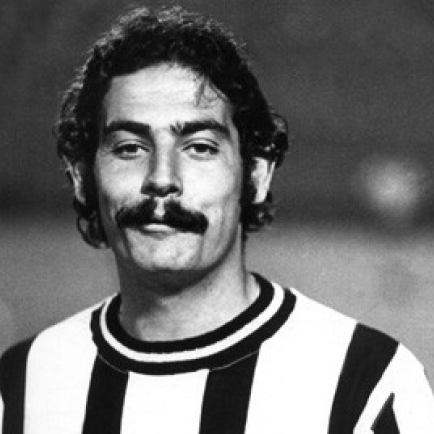
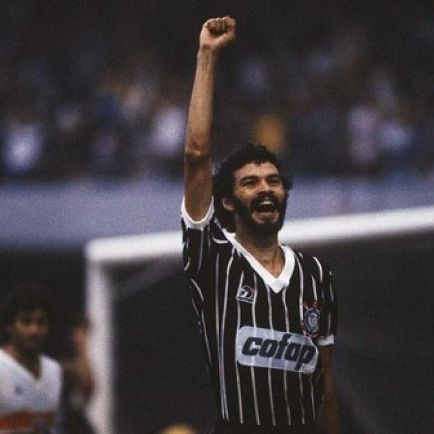
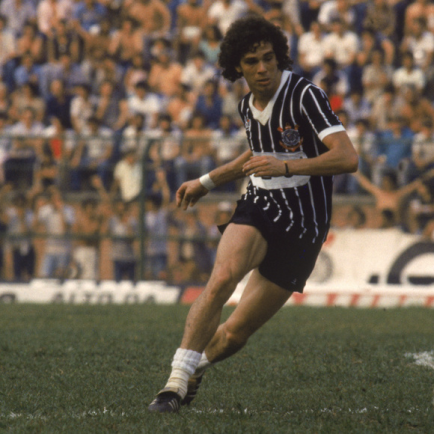
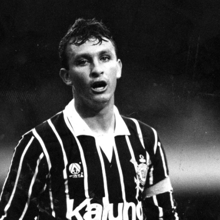

Corinthians
Sport Club Corinthians Paulista é um clube poliesportivo brasileiro da cidade de São Paulo, capital do estado de São Paulo. Foi fundado como uma equipe de futebol no dia 1 de setembro de 1910 por um grupo de operários do bairro Bom Retiro. Seu nome foi inspirado no Corinthian FC de Londres, que excursionava pelo Brasil.
Títulos
Copa do Mundo de Clubes da FIFA: 2
Copa Libertadores da América: 1
Campeonato Brasileiro: 7
Copa do Brasil: 3
Torneio Rio-São Paulo: 5
Ídolos
- 
- 
- 
- 
Rivelino
Sua carreira profissional teve início no Corinthians, onde tornar-se-ia um de seus maiores ídolos, após ser recusado em uma “peneira” no arquirrival do Timão, o Palmeiras. Por isso, sempre fazia questão de jogar bem contra o Palmeiras, para mostrar a esse clube o erro que cometeu.
Sócrates
Socrátes se firmaria no Corinthians em 1978, refazendo a dupla com seu ex-companheiro no Botafogo Geraldão. Mas seus grandes companheiros de ataque nesse time seriam Palhinha e o amigo Casagrande. Sócrates passou a dedicar se mais ao futebol depois que se formou em medicina (1977). Na Seleção Brasileira estrearia em 1979 em um amistoso contra o Paraguai. Foi uma das estrelas de times famosos em nível nacional e mundial: a Seleção Brasileira de Futebol da Copa do mundo de 1982 e do Corinthians da década de 1980, celebrizado pelo movimento da Democracia Corintiana. Na Copa de 1982 marcou dois gols contra as respeitadas equipes da URSS e Itália, mas isso não bastou para o Brasil se sagrar campeão. Também teve excelente atuação na Copa América de 1983, onde a seleção brasileira foi vice-campeã.
Casagrande
Revelado no Corinthians, Casagrande iniciou sua carreira em 1980. Porém, logo após ter se profissionalizado, o jogador, aos 18 anos, teve um desentendimento com Oswaldo Brandão, então técnico do Corinthians. Por esse motivo, Casagrande foi cedido à Caldense, de Poços de Caldas.1 . O ex-zagueiro do Corinthians na década de 60 Ditão era um grande amigo da família de Casagrande. Retornou ao Corinthians em 1982, quando fez parte da Democracia Corintiana, movimento que dizia respeito tanto ao esporte quanto à política. Os jogadores se mobilizavam em contrariedade às concentrações antes dos jogos, bem como apoiavam o movimento das Diretas Já. Durante esta época, Casagrande viveu a melhor fase de sua carreira, jogando ao lado de craques como Wladimir, Zenon, Biro-Biro e Sócrates.
Neto
Neto foi o principal jogador do Corinthians na conquista do primeiro título brasileiro de clube. O time do Corinthians era tecnicamente limitado. Os destaques, além de Neto, eram o goleiro Ronaldo e o zagueiro Marcelo Djian (dois pratas-da-casa). A equipe contava na determinação de jogadores como Márcio Bittencourt, Wilson Mano, Fabinho e Tupãzinho, além de atletas oriundos da categoria de base, como Dinei
Marcelinho Carioca
Logo que chegou ao Parque São Jorge, Marcelinho Carioca mostrou a que veio. No dia de sua apresentação chegou alcoolizado, o atacante de 21 anos previu: “Quero marcar minha passagem aqui. Vim para o Corinthians para ser campeão!”. A identificação com a torcida foi imediata e uma carreira vitoriosa estava começando. Marcelinho tem em sua conta oito títulos em oito anos pelo clube: o Mundial de Clubes da FIFA de 2000, dois títulos doCampeonato Brasileiro de Futebol, uma Copa do Brasil e quatro Campeonatos Paulistas.
Neo Quimica Arena
Maio de 2014 foi mais uma data histórica para o Sport Club Corinthians Paulista. No dia 10 daquele mês, a Fiel podia, enfim, chamar um lugar de casa: a Neo Química Arena era inaugurada com a realização de um jogo marcante: Corinthians x Corinthians, com a participação de mais de 100 ex-jogadores do Timão. Mas a história da Neo Química Arena começou, de fato, no dia 1º de setembro de 2010, quando a construção do tão sonhado estádio alvinegro foi confirmada na festa do centenário do clube no Vale do Anhangabaú, para cerca de 150 mil pessoas.
Torcida
Com mais de 30 milhões de torcedores, o Corinthians é o clube de futebol dono de uma das maiores torcidas do mundo e a maior do Brasil. O corinthiano não mede esforços para acompanhar os jogos do Timão e é capaz até de atravessar o mundo para ver o seu time em campo. Viagens, loucuras, tatuagens, milhares de histórias de amor à camisa do Corinthians. É muita coisa boa, muito corinthiano que viraria filme, mas conseguimos contar algumas dessas histórias por aqui para os leitores alvinegros acompanharem seus companheiros.